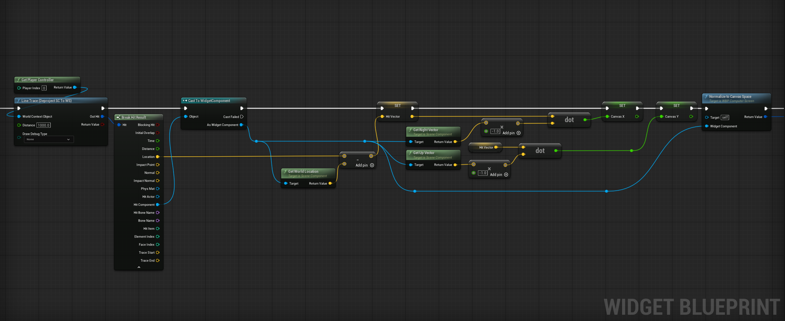
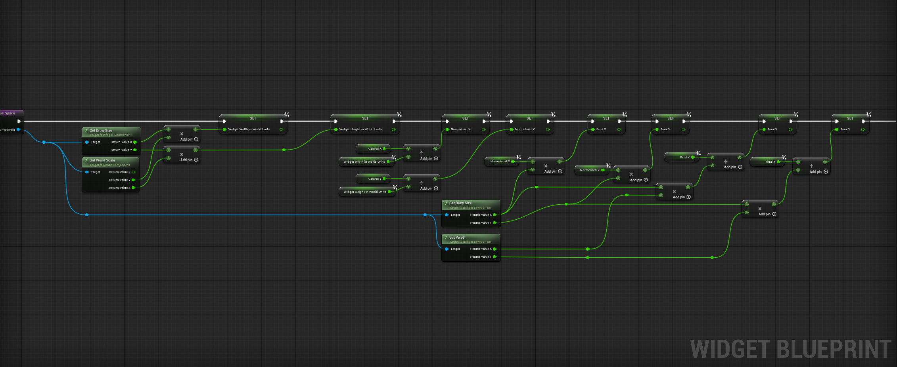

Currently being developed during downtime, emphasizing replayability and mechanical depth
Hybrid controls that being point-and-click combined with keyboard input, for a distinct experience
Core gameplay revolves around utilizing an oscilloscope, adjusting volume, and aligning signals to meet a quota all while keeping a looming threat away
The virtual desktop is the main interface the player will interact with in the game, using different apps that are installed.
The apps include the oscilloscope, signal intercepter, and upgrade stations. The player will need to navigate
through these apps to complete their objectives and progress through the game.


The signal alignment mechanic is the core gameplay loop of Signal Drift. Throughout the nights of the game,
the player must align incoming signals using the oscilloscope app on their virtual desktop. The more signals that they
align, the more points that they earn, the more credits they make to upgrade their equipment for future nights. If the quota isn't
met by the end of the night, the player will be fined and lose credits.
Throughout the game, an attacker will try to break into the players location to steal information. The attacker has 3
different stages. The first of which is approaching, when the player can hear faint footsteps around their tower as if they're being
looked for. During this stage, the player can use the camera systems on the desktop to try and drive the attacker away by setting noise decoys.
The second stage is surveying, when the attacker is figuring out the best place to attempt entry. Footsteps are much more audible, and it sounds as if
they're being observed. The player can use the cameras around their radio tower to shine light on the attacker causing him to go on cooldown.
The final stage is attempting entry. During which the player must use the must use the reinforcement system to keep the attacker at bay.
The reinforcement will drain power more quickly, so they must use it sparingly.
The player only has a limited amount of power throughout the night. However, once the power runs out, it isn't game
over. Instead, the player can change what power grid they're connected to. Switching power grids will reset the
amount of power that the player has, however, it does also take time to do, which can be especially problematic if the
attacker is trying to break in. Additionally, the player can change what power mode they're in to conserve power.
The modes inlcude normal mode, which uses power at a standard rate, power saver mode, which reduces power consumption but also
redcues the speed at which the computer will process tasks, and off, which completely stops power consumption, but also disables all electronic devices
except for the players flashlight. Managing power effectively is crucial to surviving the nights.